General
-
+
Introduction
Firstly we would love to send our great thanks to you for purchasing Scroll Magic Plugin. This documentation covers almost everything to guide you step by step from the start to have your site on air. We encourage you to read thoroughly all section before you go on.
Thanks again and enjoy building your website with Scroll Magic Plugin.
Email: bestbug.com@gmail.com
This is Wordpress version of ScrollMagic.io jquery.
Scroll Magic helps you to easily react to the user's current scroll position. It's the perfect plugin for you, if you want to ...
- Animate based on scroll position – either trigger an animation or synchronize it to the scrollbar movement (like a playback scrub control).
- Pin an element starting at a specific scroll position – either indefinitely or for a limited amount of scroll progress (sticky elements).
- Effortlessly add parallax effects to your website.
- Blah blah..
-
+
WordPress Information
Before installing Scroll Magic plugin, please make sure you have a working WordPress version already installed. For further guide to install WordPress, please find in below useful links:
- WordPress Codex: General info about WordPress and how to install your server.
- First Steps With WordPress: Multiple topics about WordPress.
- FAQ New To WordPress: Popular FAQs about WordPress.
-
+
Download Plugin Package
It is important to download the latest version of plugin package from your Codecanyon account. The Installable WordPress plugin file is just the installable WordPress plugin files, while the Plugin Package includes these following files and folders:
- Documentation Folder – contains document and other materials
- documentation.html - documentation
- changelog.html - changelog
- Installation Files Folder – contains all installable files:
- scroll_magic.zip - plugin file
- Sample Data Folder – contains sample data files:
- All-Sample-Data.xml - Main Data
- Only-Scenes.xml - Just Scenes Settings Data
- Documentation Folder – contains document and other materials
-
+
Requirement for Plugin
To use Scroll Magic plugin, follow this checklist to ensure your site can work well with Scroll Magic plugin:
- WordPress 4.x or higher
- PHP5.6 or higher
-
+
Release log
Installation
-
+
Install Plugins
Extract the package downloaded from Codecanyon, you will get the installable WordPress plugin file called scroll_magic.zip which is located in “Installation Files” folder. Choose one of two ways below to install plugin:
Via WordPress:
- Step 1. Log into your WordPress Admin area.
- Step 2. Look down the left-hand column for “Plugins” and then click on the word “Add new” Step 3. In the “Add Plugins” page, click “Upload Plugin”then click “Choose File” to browse for the plugin installation file in [path-to-your-downloaded-package]/Installation File/scroll_magic.zip). Click “Install Now”.
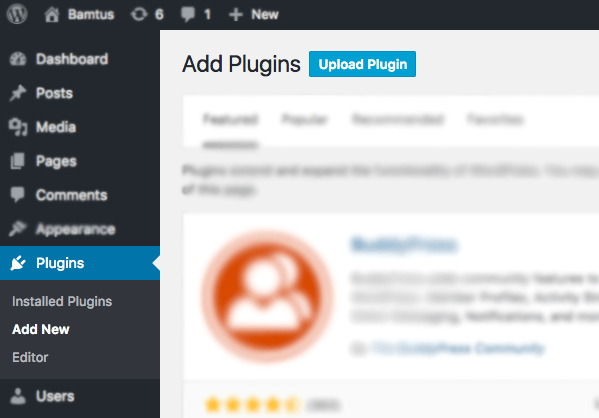
- Step 5. After installed successfully, click “Activate” to make the plugin active
Via FTP:
- Step 1. Use your FTP software to browse to “wp-content/plugins folder to install plugins
- Step 2. Extract the installation files to their corresponding folders, for example “scroll_magic.zip“ to “scroll_magic“ and upload to server
- Step 3. Once it’s uploaded, go to your WordPress Admin, browse to “Appearance > Plugins“
- Step 4. Click “Activate“ to make the plugin active
-
+
Import Sample Data
In /Sample Data/ folder, you can find there are:
- All-Sample-Data.xml - Main Data
- Only-Scenes.xml - Just Scenes Settings Data
To import sample data, Please follow these steps:
- Step 1: Make sure you have installed Scroll Magic plugin
- Step 2. In your WordPress Admin area, look down the left-hand column for “Tools > Import” and then click on WordPress
- Step 3: If it is not yet installed before, you have to install it. On the popup window, click on “Install Now“
- Step 4: After installed successfully, click on Activate Plugin & Run Importer
- Step 5: Browse for [path-to-your-downloaded-package]/Installation File/Sample Data/All-Sample-Data.xml and click Upload File and Import.
- Step 6: After uploading, the confirmation page appears. Check the Download and import file attachments option and click Submit. If you have trouble with importing (it might breaks in the middle due to long execution time), try again with this option Unchecked! Or, try to import separate files as they are smaller.
- Step 7: After uploading, the confirmation page appears. Check the Download and import file attachments option and click Submit
- Step 8: When you see a message “All done. Have fun!”, you will know that the import is done. NOTE: you may need to re-import the second time if the data is large. Back to Step 1.
-
+
Update plugins
Via Wordpress:
- Step 1: Deactivate plugin by going to Plugins > Installed plugins.
- Step 2: Delete older version by clicking on Delete link. Confirm to delete.
- Step 3: Update and re-install new version.
Auto update:
- Step 1: Go to Plugins > Add News > Upload, find and install envato-wordpress-toolkit.zip file ( click here to download)
- Step 2: To establish an Envato Marketplace API connection navigate to the Envato Toolkit page and insert your Marketplace username and secret API key in the designated input fields. To obtain your API Key, visit your “My Settings” page on any of the Envato Marketplaces
- Step 3: Once the API connection has been established you will see a list of plugins that can be auto updated/installed. If you don’t see any plugins and are certain you’ve done everything correct, there is a good chance the plugin author has not updated their plugin to be available for auto install and update. If that’s the case, please contact the plugin author and ask them to update their plugin’s information
Via FTP:
- Unzip the .zip files of the plugin.
- Login to your FTP account and navigate to your WordPress Installation directory
- Navigate to the folder /wp-content/plugins
- Override the folders of these plugins
How to use?
-
+
Plugin Settings
In your WordPress Admin area, look down the left-hand column for “Scroll Magic > Settings”
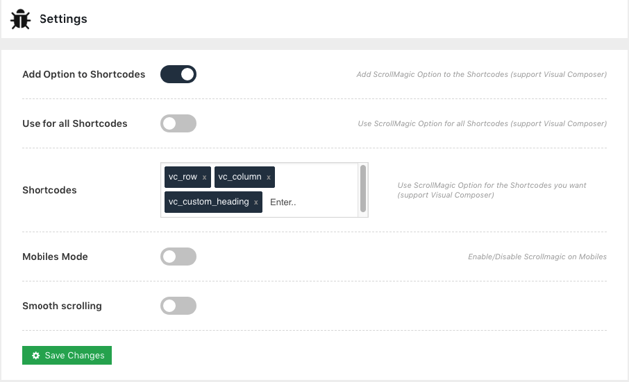
Options:
- Mobile mode: You deactivate ScrollMagic on mobile.
- SmoothScroll mode: Smooth scroll on your site.
-
+
Scenes
A Scene is an object include animation, you can apply scene to all elements via CSS class name
-
+
Create Scene
In your WordPress Admin area, look down the left-hand column for “Scroll Magic > Add Scene”
And with this Scene Builder (Live preview) you can see any thing you change just now.
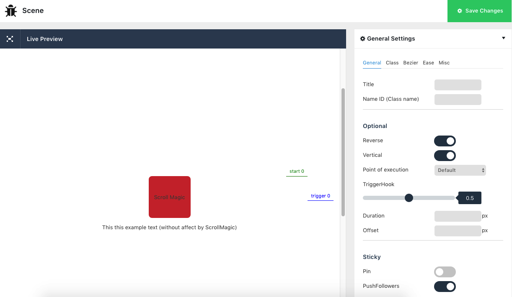
General Settings:
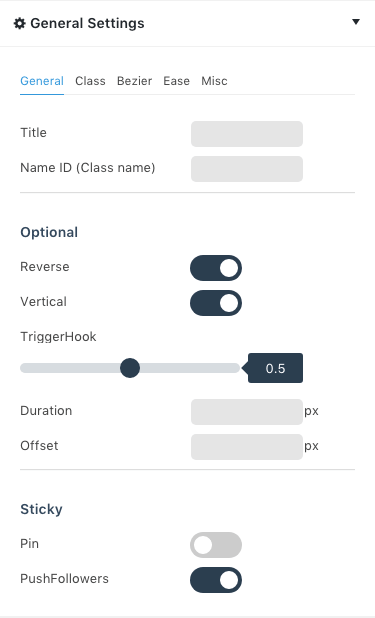
- General:
- Title: Just title of scene
- Name ID (Class name): It's is unique, you can add it likes css Class to elements
- Reverse: Reverse animations when scroll-up
- Vertical: Scroll vertical or horizontal
- TriggerHook: Can be a number between 0 and 1 defining the position of the trigger Hook in relation to the viewport.
- Duration: The duration of the scene. If 0 tweens will auto-play when reaching the scene start point, pins will be pinned indefinetly starting at the start position.
- Offset: Offset Value for the Trigger Position.
- Pin: Pin an element for the duration of the tween. If the scene duration is 0 the element will only be unpinned, if the user scrolls back past the start position. Make sure only one pin is applied to an element at the same time. An element can be pinned multiple times, but only successively.
- PushFollowers: has no effect, when the scene duration is 0.
- Class:
- Enable: Enable to add class animation css
- Class CSS: over 75 animations available for you choose
- Bezier:
- x: x position of element when scroll
- y: y position of element when scroll
- Ease:
- Duration ease: The animation's duration
- Delay: The delay's duration
- Type: You can watch "how to ease works?" in here
- Misc:
- Draw SVG: Enable draw SVG
- Selector: You can apply scene to selectors (jquery Selectors) separated by spacing
- Container: A scroll container can be any element (usually a div though), that has scrolling happening inside of it.
Before Scrolling:
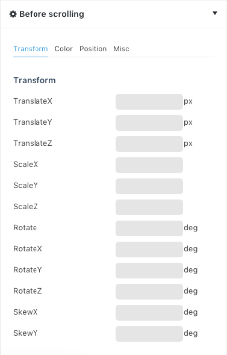
- Transform:
- TranslateX: Defines a translation, using only the value for the X-axis
- TranslateY: Defines a translation, using only the value for the Y-axis
- TranslateZ: Defines a 3D translation, using only the value for the Z-axis
- ScaleX: Defines a scale transformation by giving a value for the X-axis
- ScaleY: Defines a scale transformation by giving a value for the Y-axis
- ScaleZ: Defines a 3D scale transformation by giving a value for the Z-axis
- Rotate: Defines a 2D rotation, the angle is specified in the parameter
- RotateX: Defines a 3D rotation along the X-axis
- RotateY: Defines a 3D rotation along the Y-axis
- RotateZ: Defines a 3D rotation along the Z-axis
- SkewX: Defines a 2D skew transformation along the X-axis
- SkewY: Defines a 2D skew transformation along the Y-axis
- Color:
- Color: The color property specifies the color of text.
- Background Color: Property sets the background color of an element.
- Background Attachment: Property sets whether a background image scrolls with the rest of the page, or is fixed.
- Position:
- Position: The position property specifies the type of positioning method used for an element (static, relative, absolute or fixed).
- Top: For absolutely positioned elements, the top property sets the top edge of an element to a unit above/below the top edge of its nearest positioned ancestor. Note: If an absolute positioned element has no positioned ancestors, it uses the document body, and moves along with page scrolling. Note: A "positioned" element is one whose position is anything except static.
For relatively positioned elements, the top property sets the top edge of an element to a unit above/below its normal position.
Note: If "position:static", the top property has no effect.
- Left: For absolutely positioned elements, the left property sets the left edge of an element to a unit to the left/right of the left edge of its nearest positioned ancestor.
Note: If an absolute positioned element has no positioned ancestors, it uses the document body, and moves along with page scrolling.
Note: A "positioned" element is one whose position is anything except static.
For relatively positioned elements, the left property sets the left edge of an element to a unit to the left/right to its normal position.
Note: If "position:static", the left property has no effect.
- Bottom: The bottom property specifies the vertical position of a positioned element. This property has no effect on non-positioned elements.
If position: absolute; or position: fixed; - the bottom property specifies the distance between the element's bottom edge and the bottom edge of its containing block.
If position: relative; - the bottom property makes the element's bottom edge to move above/below its normal position.
If position: sticky; - the bottom property behaves like its position is relative when the element is inside the viewport, and like its position is fixed when it is outside.
If position: static; - the bottom property has no effect.
- Right: For absolutely positioned elements, the right property sets the right edge of an element to a unit to the left/right of the right edge of its nearest positioned ancestor. Note: If an absolute positioned element has no positioned ancestors, it uses the document body, and moves along with page scrolling. Note: A "positioned" element is one whose position is anything except static.
For relatively positioned elements, the right property sets the right edge of an element to a unit to the left/right to its normal position.
Note: If "position:static", the right property has no effect.
- Misc:
- Width: The width property sets the width of an element.
- Height: The height property sets the height of an element.
- Opacity: The opacity property sets the opacity level for an element.
The opacity-level describes the transparency-level, where 1 is not transparent at all, 0.5 is 50% see-through, and 0 is completely transparent.
- Z-Index: The z-index property specifies the stack order of an element.
An element with greater stack order is always in front of an element with a lower stack order.
Note: z-index only works on positioned elements (position:absolute, position:relative, or position:fixed).
- Overflow: The overflow property specifies what happens if content overflows an element's box.
This property specifies whether to clip content or to add scrollbars when an element's content is too big to fit in a specified area.
Note: The overflow property only works for block elements with a specified height.
After Scrolling:
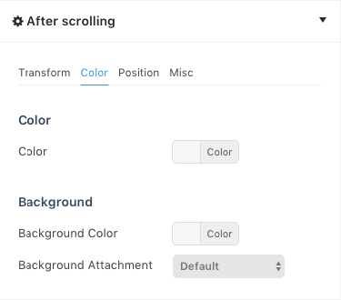
- Has properties like Before Scrolling
- General:
-
+
Scenes Management
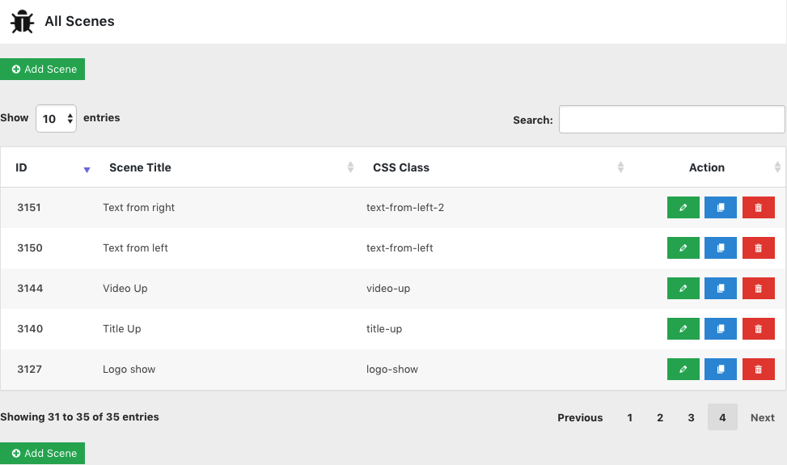
- ID: ID of scene
- Scene: Title of scene
- CSS Class: Class ID of scene, you use this class to apply elements
- Action:
- Edit: Go to edit a scene
- Clone: Clone a scene
- Remove: Remove a scene
-
+
Apply Scene
In your WordPress Admin area, look down the left-hand column for “Scroll Magic > All Scenes” and see comlumn CSS Class
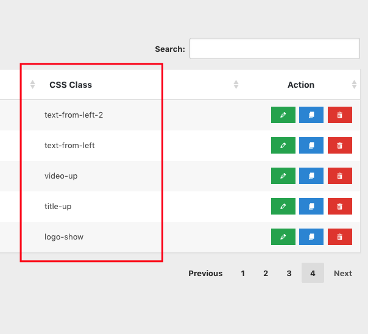
In Page or Post editor you can use ScrollMagic shortcode
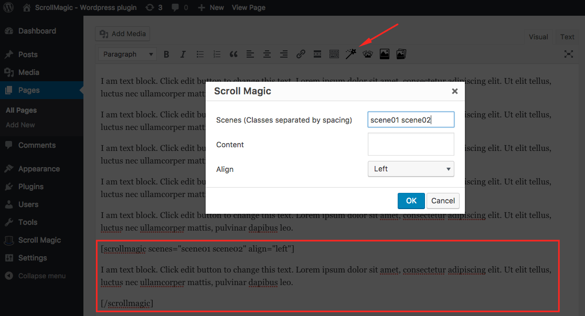
-
+
Image Sequence
You can upload images and get ids of images
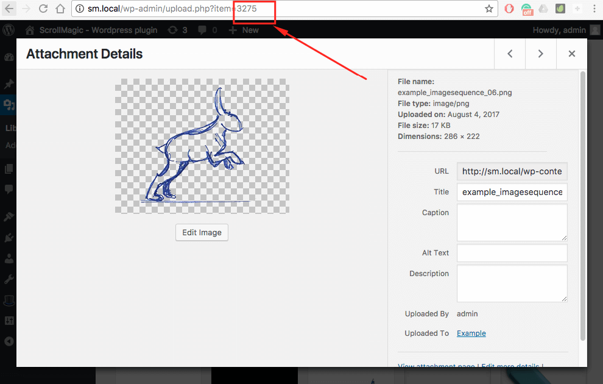
In Page or Post editor you can use Image Sequence shortcode
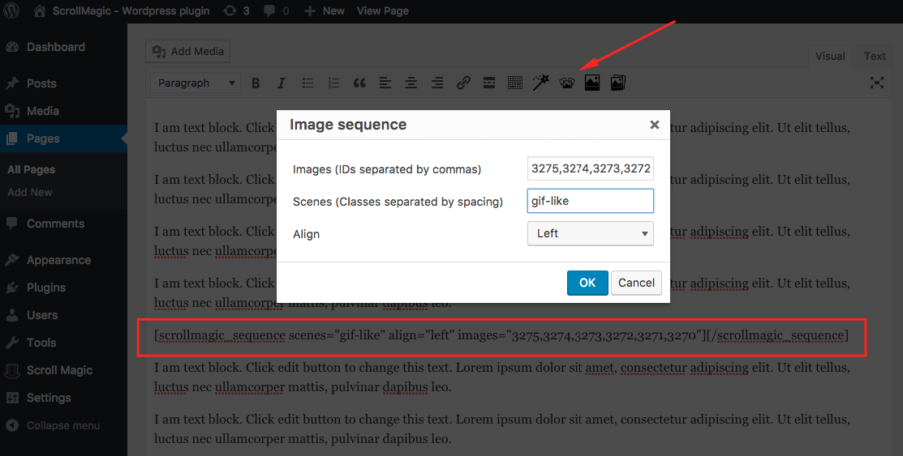
-
+
Draw SVG
This plugin uses the jQuery built-in animation engine to transition the stroke on every
<path>inside the selected<svg>element, using stroke-dasharray and stroke-dashoffset properties.The first, you need to install SVG Support plugin to upload svg file.
Then you can upload SVG file and get id of SVG.
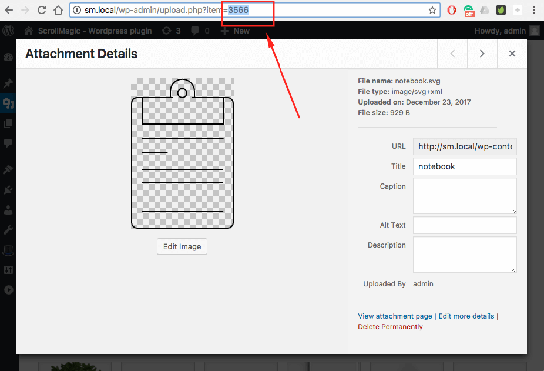
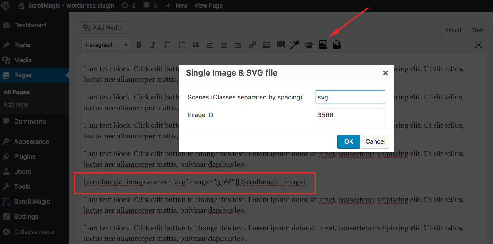
In Page or Post editor you can use SVG shortcode
Examples
-
+
Demo Online
FAQs
-
+
Support WPBakery Page Builder
This plugin support shortcodes for WPBakery Page Builder
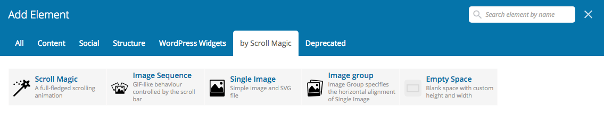
ScrollMagic shortcode
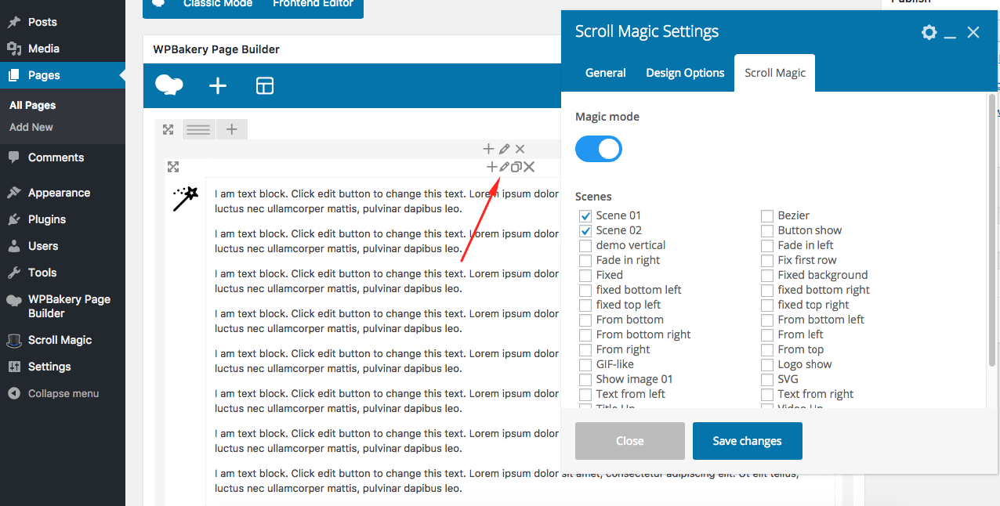
- You can drag and drop any element into ScrollMagic shortcode.
- Choose Scenes in ScrollMagic tab or you can input Classes scene in Extra Class
- 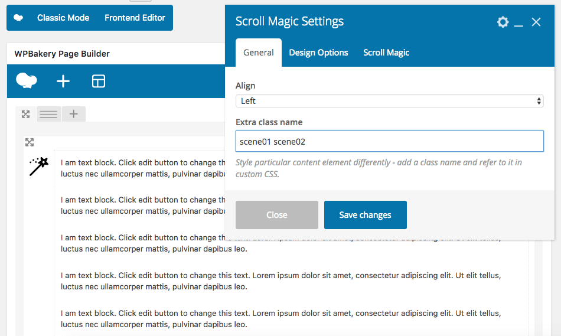
Sequence shortcode

- You can choose images so easy.
- Choose Scenes in ScrollMagic tab or you can input Classes scene in Extra Class
Draw SVG shortcode
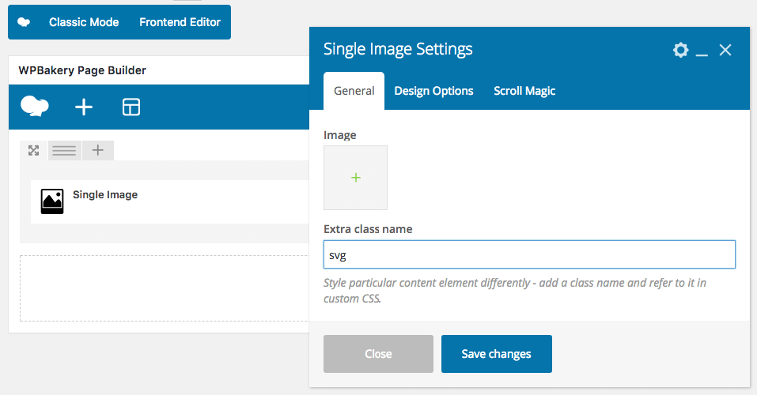
- You can choose SVG image so easy.
- Choose Scenes in ScrollMagic tab or you can input Classes scene in Extra Class
-
+
Support KingComposer
Apply scenes to all shortcodes via CSS Classes (Extra Class)
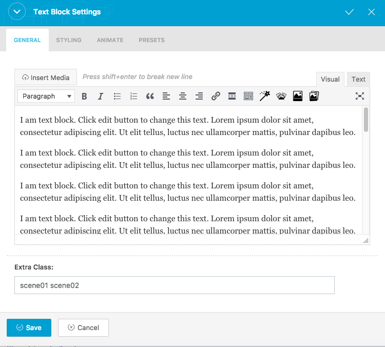
Draw SVG, ImageSequence shortcode
- You can use with Text Block shortcode and use it likes default editor of Worpress.
-
+
Support Elementor
Apply scenes to all shortcodes via CSS Classes
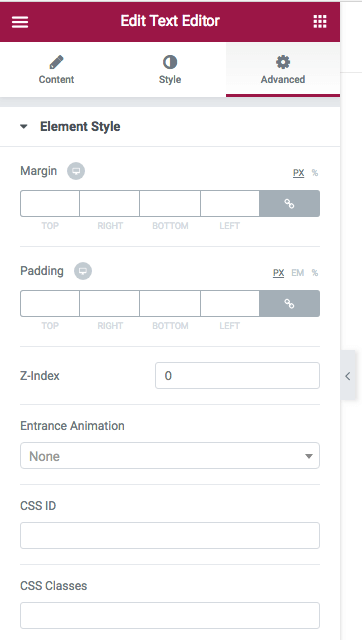
Draw SVG, ImageSequence shortcode
- You can use with Text Editor or Shortcode shortcode and use it likes default editor of Worpress.
-
+
Support Other Builders
Find where you can put CSS Classes and you can run ScrollMagic on your site